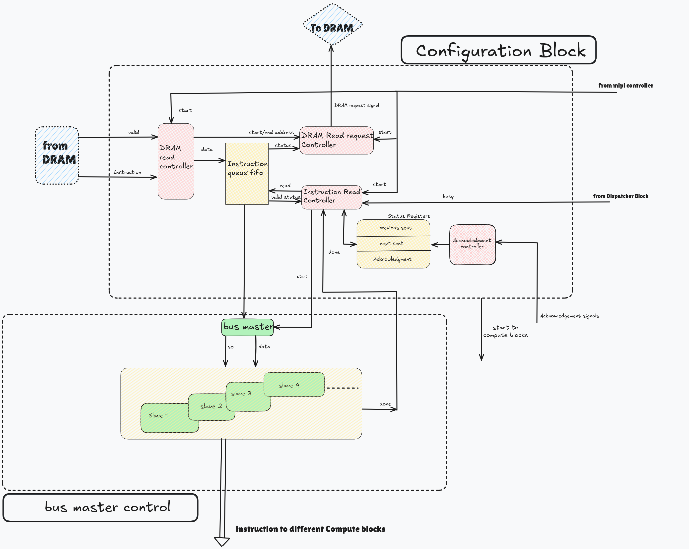
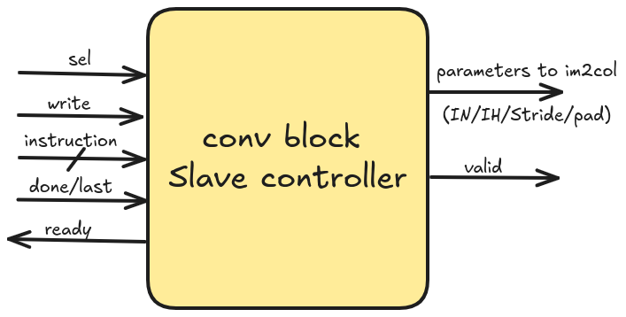

Configuration Block¶
This document presents the design of configuration block that reads the instructions from DDR and send to the various blocks in the architecture.
Note
This is an incremental document and subjected to change with the model. In this entire document, the term ‘block’ refers to the computational unit that recieves the instruction and respond when it’s done.
The below figure shows the architecture for configuration block wherein, it comprises, an instruction Queue of data width 256-bit wherein the instructions read from DDR gets stored in and applied to the various blocks when required.
{kind=link}

Global Registers: These registers hold the start and end address (32-bit AXI address) of the instructions in DDR layout. These are written by MIPI controller during the initial load of DDR. After recieving start signal to the configuration block, these register contents are read internally by a ‘DRAM read request generator’ and ensures that it reads all the valid instructions in the address range that was provided.
Staus Register File
Previous Sent Register and Next Sent Register: These registers contains a two-bit field for each unique instruction. An example is shown below
Conv |
FC |
Tail |
OP |
|---|---|---|---|
01 |
00 |
01 |
01 |
Here, the top row shows the instruction field and bottom row shows the status. “00” denotes Instruction Not Sent, “01” denotes Instruction Sent and “11” denotes Instruction Acknowledgment recieved.
Acknowledgment Register: Upon the recieving the acknowledgment/done status of the blocks then the respective bit fields are reset to ‘0’. On the other hand, after sending the “START” command to the blocks, the respective bit positions of this register is set to ‘1’ based on the bit fields of “Next Sent Register”.
Conv |
FC |
Tail |
OP |
|---|---|---|---|
1 |
0 |
1 |
0 |
Here, ‘1’ denotes that the acknowledgment is pending which indicates that the block not yet finishes the computation. On the other hand, ‘0’ indicates either acknowledgment is recieved (corresponding instruction execution is finished) or instruction not sent. To know the exact status, this can be chekced inline with the “Previous Sent Regsiter”.
Note that the size of these registers depends upon the number of unique instructions used in the model (excluding START instruction).
DRAM read request generator
Upon recieving start signal, it load the contents of ‘Global register’ and send a request to DDR. Based on the status of ‘Instruction Queue’, it initiate read requests till it reaches ‘end address’. In each iteration, the next address to be read is updated by adding the offset to the current address that was requested. Here, the address is sent in the form of 8-bit packets, and an active high is issued on ‘Last’ signal indicating that it is the last address packet of current request. (Refer to AXI documentation to understand the terminology of the signals associated with this request generator)
BUS Master Controller
It sends the instruction in 8-bit packets to the blocks upon recieving start signal from ‘Inst. read controller’. If the instruction is START then it issues a “START” command to the blocks. Otherwise based upon the ‘opcode’, it will send the instruction to the corresponding block. The description of various signals associated with this controller are as follows,
SELx (select signal) : Number of ‘SELx’ is equal to the blocks. It is asserted to active high based on the ‘opcode’ of the instruction that was prefetched.
WRITE: Asserted to active high to send the valid 8-bit instruction packet.
READY: It is sent by the slave, when it is active high then master will assert all the necessary signals to slave.
DONE/LAST: Asserted to active high to indicate the last valid transfer of the current transaction.
Instruction Bus: 8-bit bus to the slave.
Instruction read controller
This controller monitors the status of “Instruction Queue” and “Status Register File” and decides whether a new instruction can be sent or not. The way in which the instruction is prefetched and sent to blocks is described as follows,
Initially, the ‘Acknowledgment register’ contains all zeroes, and if instruction queue is not empty then this controller will read the instruction and send to the blocks via ‘BUS Master controller’. At the same instant it updates the status of ‘Next sent register’ bit fields to Instruction Sent. In addition, it prefetches the next instruction from the queue and by monitoring the ‘DONE’ signal of ‘BUS Master controller’, the next instructions were sent.
After issuing START command, ‘Next sent register’ is copied to ‘Previous sent register’, update the respective bit fields of ‘Acknowledgment register’ and then reset the ‘Next sent register’.
Now, the next instruction is prefetched and based on the ‘opcode’, check the status of ‘Previous sent register’.
If the status is Instruction Not Sent then send to the block via ‘BUS’, otherwise wait till the status modified to Instruction acknowledgment recieved. Repeat it till START instruction is encountered.
In each iteration, when a START instruction is encountered then compare ‘Layer no.’ and ‘Total Layers’ fields. If both are not equal, repeat this step 2, otherwise goto step 3.
If ‘Layer no.’ and ‘Total Layers’ fields of START instruction are equal, then stop prefetching the queue and wait for the status of ‘Previous sent register’ status to Instruction acknowledgment recieved or ‘Acknowledgment register’ is zero. After that, reset all the status register files and goto idle state again.
Note
Before starting a new layer computation, a “START” command is issued and make sure that ‘Acknowledgment register’ is zero (i.e, all the previous instructions that were sent are finished thier computation).
Controller Ack.: If it recieves valid acknowledgments from various blocks then it reset the corresponding bit fields of ‘Acknowledgment register’ and updates the status of ‘Previous sent register’ to Instruction acknowledgment recieved.
An example of the slave controller at the block for each unique instruction is shown below
{kind=link}

In similar manner, each block has one slave controller that accepts the valid instruction upon assertion of active high on SEL. If DONE/LAST becomes active high then based on the information in the instruction, the hyper parameters or configuration inputs required by the operators are applied.